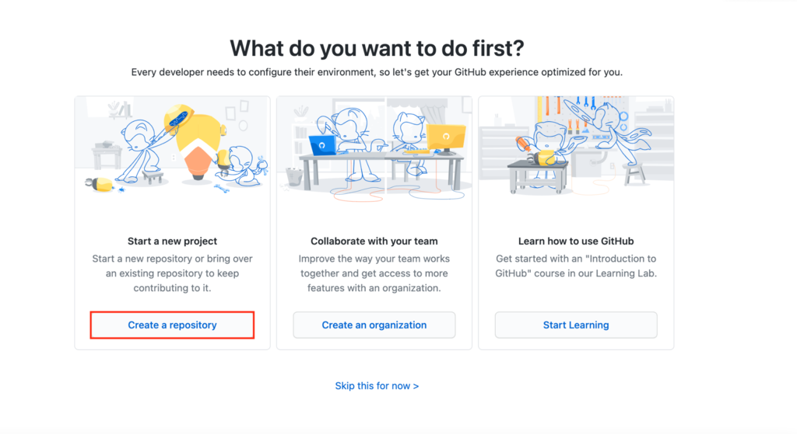
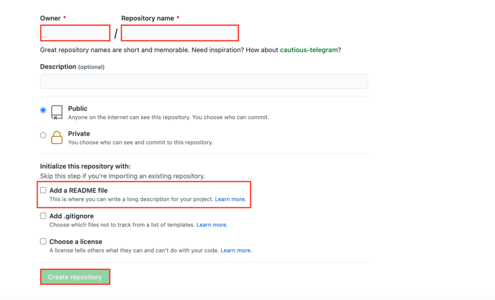
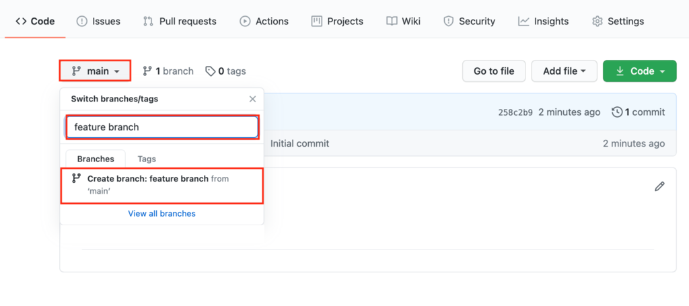
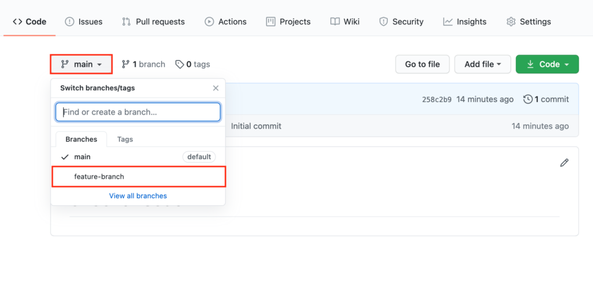
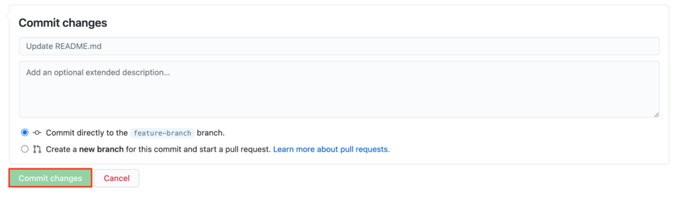
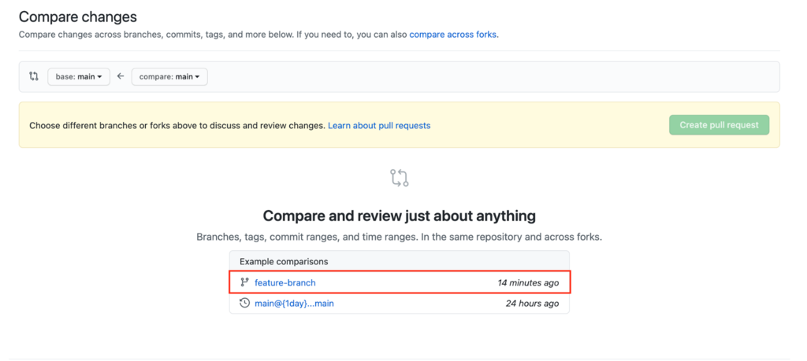
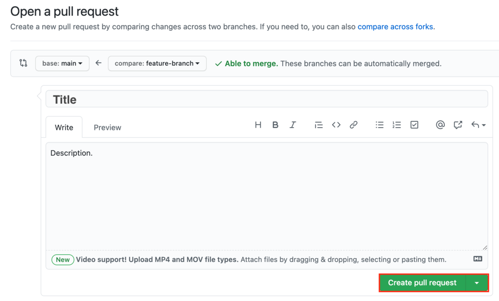

GITHUB
Que es Github
Github es un sistema de control de versiones gratuito y de código abierto, creado originalmente por
Linus Torvalds en 2005. A diferencia de los antiguos sistemas centralizados de control de versiones,
como SVN y CVS, Git se distribuye: cada desarrollador tiene el historial completo
de su repositorio de código localmente. Esto hace que la clonación inicial del repositorio
más lento, pero las operaciones subsiguientes como cometer, culpar, diferenciar, fusionar y registrar son
mucho mas rápido
Git incluye las capacidades de bifurcación y fusión y reescritura del historial del
repositorio, lo que da como resultado muchas herramientas y flujos de trabajo innovadores y potentes.
Las solicitudes de subida son una herramienta popular con la que los equipos pueden colaborar en las ramas de Git
y revisar efectivamente el código de cada uno. Git es el más utilizado sistema de control de versiones
en el mundo de hoy, y se considera el modelo a seguir en desarrollo de software.
Como funciona Github
Funciona de la siguiente manera:
- Crea un "repositorio" (proyecto) usando una herramienta de hosteo
- Copia (clone) el repositorio a tu maquina local
- Añade un archivo a tu repositorio local y crea una "instantanea"(commit, confirmacion) de los cambios
- "Sube" (push) los cambios a la rama principal
- Haz cambios a tus ficheros con un editor compatible con Git y subelos
- Extrae (pull) los cambios a tu maquina local
- Crea una rama (branch), realiza cambios y subelos
- Abre una solicitud de subida (pull request: sugiere cambios sobre la rama principal)
- Combina (merge) tu rama con la rama principal
Aprendiendo a usar GitHub
Crear un repositorio GitHub
El repositorio sera el eje central de tu proyecto. Puede ser un archivo o conjunto de archivos
contenedores de codigo, imagenes, texto, o otras cosas. Para comenzar el proceso, sigue estos pasos:
- Haz click en crear un repositorio para iniciar un nuevo proyectos

- La seccion del propietario tendra tu nombre de usuario. Crea un nombre para el repositorio.
Comprueba que estge definido como Publico para hacerlo de codigo abierto, y marca la opcion de añadir
archivo README. Por ultimo haz click en crear repositorio.

Cerrando ramas en GitHub
Con las ramas, generas diferentes versiones de un repositorio. Haciendo cambios en el proyecto sobre
la rama actual, el desarrollador puede ver como afectará al proyecto principal cuando sean integrados.
Asi es como puedes generar una rama independiente: Ve a tu nuevo repositorio. Pulsa sobre el boton
principal e ingresa el nombre de tu nueva rama. Click en crear rama.

Comprendiendo los commit de Github
Los commits son la forma en que se denominan los cambios guardados en GitHub.
Cada vez que cambies el archivo de la rama de características, tendrás que hacer un
Commit para mantenerlo.
A continuación te explicamos cómo hacer y confirmar un cambio:
- Accede a tu rama clickando en main y seleccionando tu recien creada rama del "dropdown".

- Haz click en el icono de lapiz para comenzar a editar el archivo. Cuando termines, escribe
una breve descripcion de los cambios que has hecho. Click en confirmar cambios.

Creando solicitudes de subida en GitHub
Para proponer los cambios a otros developers trabajando en el mismo proyecto, debes crear una
"pull request". Estos facilitan el trabajo en equipo, tambien son la pricipal herramienta de
colaboracion de GitHub. Estas solicitudes permiten ver las diferencias entre el proyecto pricipal
y una rama. Es una manera de consultar a tus compañeros que revisen tu trabajo. Si el resto de los
developers lo aprueban, pueden combinar la solicitud, lo que aplicara esos cambios al main branch.
Para hacer una pull request sigue estos pasos:
- Click Pull requests -> Nueva pull request. Por ejemplo, elige la rama en la que estas trabajando.

- Revisa los cambios una vez mas y pulsa Crear pull request. En la nueva pagina, escribe el titulo y
una breve descripcion de lo que ha trabajado para promover la fusión. Click en crear pull request.
